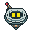
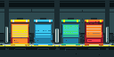
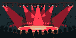

A guide for first-time passengers · for app 1.1.4 · updated November 27, 2026
Starter guide
Neon Station is an idle RPG where your character fights on its own while the app is on. A few minutes a day is enough. Read this page and you will know what to do on day one and when each thing opens.

Welcome, runner. I am the guide drone of Platform 0. In the game, I also give you a short tour each time you open a menu for the first time. This page puts all of that in one place.
1Install
iPhone · iPad
- Find 「Neon Station」 on the App Store and install it.
- An account is made automatically when you open the app. There is no sign-up.
Android in review
- Waiting for Google Play review for the full release.
- Once it is out, find 「Neon Station」 on Google Play and install it. We post release news in our notices and on Instagram.

Your progress is backed up to the server every 10 minutes (from 1.1.4, guests included). If you plan to change phones or delete the app, link a Google or Apple account in Profile › Account Link, or make a recovery code. You can load everything on the new device.
2The first 10 minutes
The first time you open the game, you pick one of three groups. Whichever you choose, you can collect the same gear and looks, so pick the one you like. The difference is the starting weapon and a small passive bonus.


- Watch the introA short story in 7 cuts plays. You can skip it and watch it again later in Profile › Settings.
- See the battle run on its ownAuto hunting starts in District 1, Rust Sewers. Without touching anything, you take down gangs and Coins pile up.
- Trade with the Arms Dealer once you have CoinsTrade Coins at [Add-ons] › [Arms Dealer] to get random gear. It is open from the start.
- Wear gear marked ▲▲ means equipping it raises your combat power. Your character's look changes the moment you put it on. Clear out spare gear with [Sell all].
- Upgrade the Arms Dealer with FameEvery trade adds 1 Fame. Spend Fame to upgrade the Arms Dealer and higher grades start to appear.
- Open the free box in the ShopThe free box in [Shop] resets every day at 9 AM. When you first start, you also get 100 Credits.
3A look around the screens
There are five tabs at the bottom of the screen. Level, combat power and currencies show at the top, and tapping the profile image at the top left opens your Profile.

Bottom tab 1
BattleAuto hunting and boss fights. Your equipped gear, My stats and the Playtime reward are here.
Bottom tab 2
Special JobsEach currency has its own job. Play or sweep each job three times a day.
Bottom tab 3
Add-onsArms Dealer, Implants, Skill Tree, Pets, Palette Builder. They open one by one as you level up.
Bottom tab 4
OnlineThe left card is PVP (the underground arena Pit), the right card is Lines (guilds).
Bottom tab 5
ShopFree box, Credit items, Auto Trade, PvP tickets, extra job entries.
Profile at the top left
ProfileTitles, rankings, Account Link, Enter Coupon, Game Guide, language settings.
Tap the chat bar under the battle screen to open global chat. Tap another runner's name to see their profile and challenge them to a friendly duel.
4How you grow
The game has one big loop. Swap your gear with the Coins you earn from hunting, and go deeper into the districts as you get stronger.
- HuntAutomatic while on. Builds up to 3 hours even when off
- CoinsHunting · offline rewards · vault raids
- Arms Dealer tradeCoins → random gear, Fame +1 per trade
- EquipSwitch to ▲ gear and both your power and look change
- Next districtPast the bosses, all the way to District 10, Data Core
And then Fame → Arms Dealer upgrade → higher grades → trade again.
Each district has 20 stages, and each stage has 5 waves. Stages 10 and 20 are boss fights. If you lose, the stage starts over, so swap your gear and try again when you get stuck. Beat the District 10 boss and the city starts again, stronger.
5What opens by level
Account level
This level rises with battle XP. Locked menus show a shutter and the level they open at, and you get an alert when they open.
- Lv1Arms Dealer · Special Jobs · PVP · ShopStart with the Special Jobs 「Gang Vault Raid」 (Coins) and 「Fixer Job」 (Fame).
- Lv5ImplantsUse Chrome for nerve, skeletal and intelligence implant surgery. The 「Cyborg Scrapyard」 (Chrome) job opens too.
- Lv10Skill Tree · LinesSpend Chips on skills in six branches: Stats, Jobs, PVP, Implants, Pets and Add-ons. The 「Relay Server Hack」 (Chips) job opens, and you can board a Line guild from the Online tab.
- Lv15PetsSpend Food to adopt 55 robot pets and drones (five per grade). The 「Supply Truck Heist」 (Food) job opens.
- Lv20Palette BuilderLook collection, painting, style tags, Signature Sets.
- Lv50Second implant slotEach line gets a second slot.
Arms Dealer level and gear grades
A grade only appears once the Arms Dealer reaches its unlock level. The Arms Dealer goes up to Lv50.
Arms Dealer upgrades take time (a few minutes early on, up to 2 days later). Watch an ad to cut 30 minutes (twice at a time), or finish at once with Credits (1 Credit per minute left). You get an alert when it is done.
6Daily tasks
Most things reset every day at 9 AM (Korea time, UTC+9). The list below is a checklist saved only in this browser, and it clears itself after 9 AM.
Every Monday at 9 AM
- The weekly PVP ranking is locked in. Tap [Claim reward] under 「Last week's ranking reward」 at the top of the PVP screen. Only runners who fought at least once are ranked.
- The Riot Train restarts from Train 1. From Train 1 Blackout to Train 10 Terminus, HP rises sharply and rewards grow with each stage. Rewards are split by the damage you dealt to that train (contribution).
7Six currencies
| Currency | Where to get it | What it is for |
|---|---|---|
| Hunting, offline rewards, 「Gang Vault Raid」 | Arms Dealer trades, Line fares | |
| Fame | +1 per Arms Dealer trade, 「Fixer Job」 | Arms Dealer upgrades, Signature Set hint pieces |
| Bosses, 「Cyborg Scrapyard」 | Implant surgery and upgrades, Blueprint shard exchange | |
| Bosses, 「Supply Truck Heist」 | Pet adoption, Blueprint shard exchange | |
| 「Relay Server Hack」, Line Token Shop | Skill Tree | |
| Free box, 100 at the start, PvP weekly rewards, Riot Train, Shop top-ups | Finish now (1 min = 1), Auto Trade (20), PvP tickets, extra job entries (40), nickname change (50), creating a Line (100) |
There are also Blueprint shards, which build up when you sell gear (for unlocking looks and painting), and Tokens, used only inside a Line. Rewards like offline rewards and Special Jobs can be tripled by watching an ad.
8Tips worth knowing
My gear keeps piling up
The Arms Dealer inventory is sorted by how much each item would raise your combat power if equipped. [Sell all] sells only gear that would not raise your power. Tap [Lock] in a gear's details to protect gear you want to keep from selling.
I cannot get high grades (pity)
If 200 trades at the same Arms Dealer level never give that level's unlock grade or higher, the next trade is guaranteed to give the unlock grade. For the Ripper Medic and Pet Breeder it is 100. Both go up to Lv15 and unlock Quantum (Lv12), Void (Lv14) and Origin (Lv15). Tap the Arms Dealer portrait to flip through the odds by level, and see all other odds under 「Probability info」 on each screen.
Melee or ranged, which is better?
Ranged weapons fire from where you stand, while melee walks up to the enemy to fight. To make up for the hits taken on the way in, melee weapons take 8% less damage, with an extra adjustment in PVP. The gear options 「Melee Attack」 and 「Ranged Attack」 only apply when your weapon type matches, so check the options when you switch weapons.
How do I complete a Signature Set?
① Use 3 hint pieces to find out the slots and looks you need (earn them while playing or buy them with Fame). ② Unlock those looks in the collection (get the gear or unlock them with Blueprint shards). ③ Equip or paint every needed slot with those looks. The moment everything matches, the set is discovered automatically and you get the set aura, set profile and a title. There are 40 sets, and 31–40 use upper looks (item Lv26 and above).
What is painting?
In Palette Builder › Style, you put a different look on a gear slot. Stats stay the same and only the look and style tags change. It costs Blueprint shards, and removing it is free.
Will I lose my progress if I change phones?
From 1.1.4, guest accounts also back up progress to the server every 10 minutes. To load it on a new device, though, you need a key. Link a Google or Apple account in Profile › Account Link, or make a 16-digit recovery code just below it and write it down somewhere safe. Enter the code on the new device's race select screen or in Profile to load your progress. A recovery code shows again only on the device that made it, so keep a separate copy.
Where do I get coupons?
Coupon codes are posted on Instagram @_neon_station and in this site's news. Enter them in Profile › [Enter Coupon] to get the reward. Once per account, and you need an internet connection.
I want to switch languages
Pick 한국어, English, 中文(简体) or 日本語 in Profile › Settings › Language. It applies right away. Chat messages and nicknames are not translated.
I saw an offensive message in chat
Tap that person's name to open their profile, then tap [Report] or [Block]. Reports are checked by staff, and messages reported several times are hidden automatically. You will not see messages from people you block.
How do payments and refunds work?
In-app purchases go through your device's store account, and refunds follow the store's refund process. For details, see Support (Korean) and the Terms (Korean).
9Terms
- Runner
- The player. Your in-game name is 「Null」, after your blank chip.
- Add-ons
- The tab that gathers the merchants of Platform 0 and the growth menus.
- Pit
- The underground arena, where PVP happens.
- Lines
- A guild. The leader is the Driver, the deputy is the Conductor.
- Riot Train
- The Line boss that comes down each week, from Train 1 to Train 10 in turn.
- Pity
- A guarantee that gives you a good grade if it has not appeared within a set number of tries.
- Blueprint shards
- A material that builds up when you sell gear. Used for unlocking looks and painting.
- Resonance
- A bonus when all 5 equipped slots are the same grade or higher.
- Echo Infection
- A strong but risky state that appears when high-grade implants and energy looks stack up.
- Sweep
- Getting the rewards of a job you already cleared, instantly and without a fight.
- Item level
- Level within the same grade (1–50). From Lv26, gear wears an upper look.
- Recovery code
- A 16-digit code. The key that loads your progress on a new device without account linking.
- Neural load
- The cap on the total grade of your implants. Raised by the Implants branch of the Skill Tree.
10Learn more
In the game, tap Profile › Game Guide to see detailed rules for each menu. Have a good trip, runner.